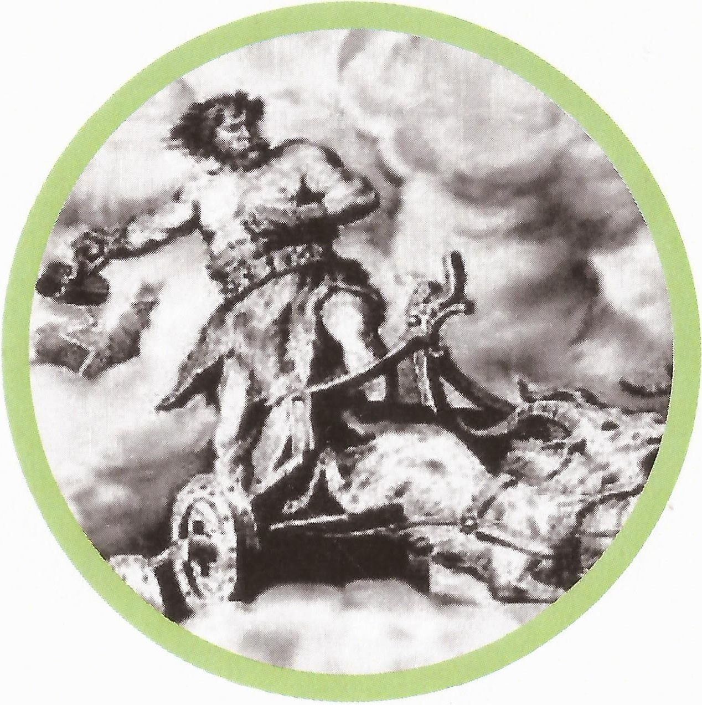
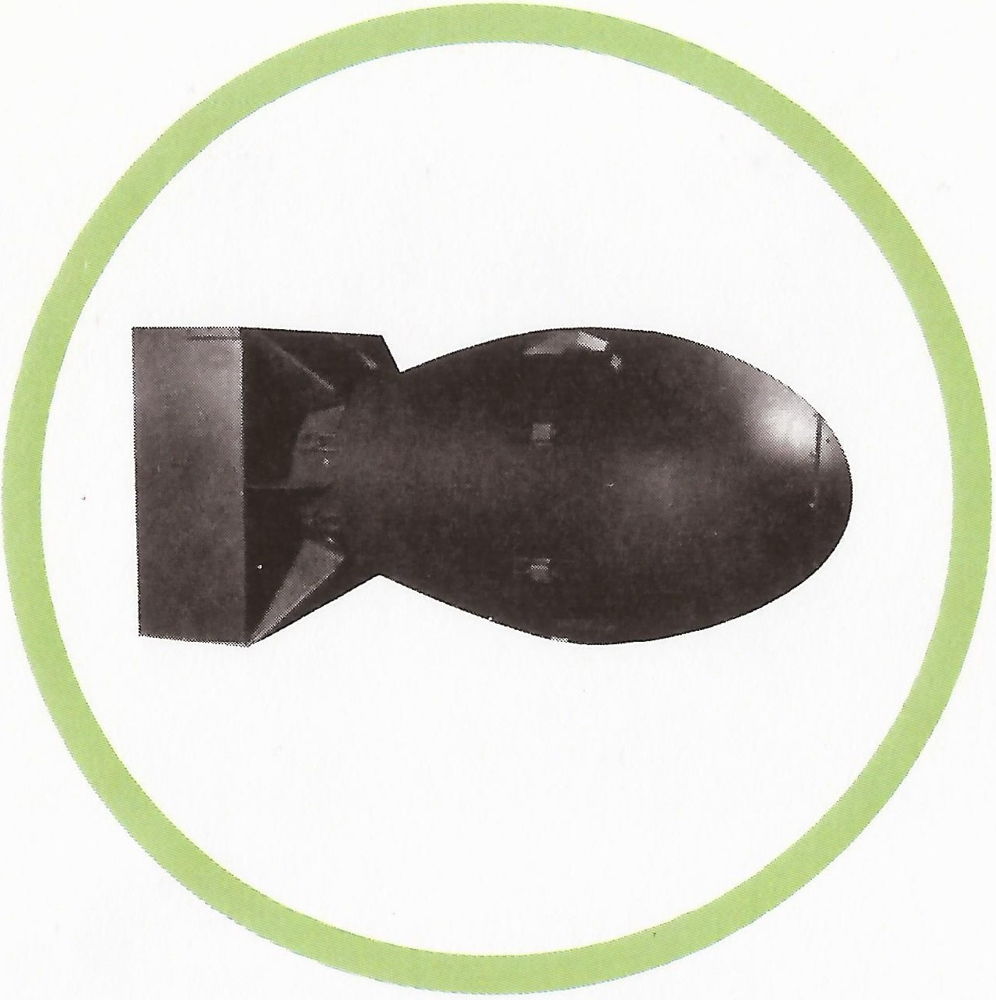
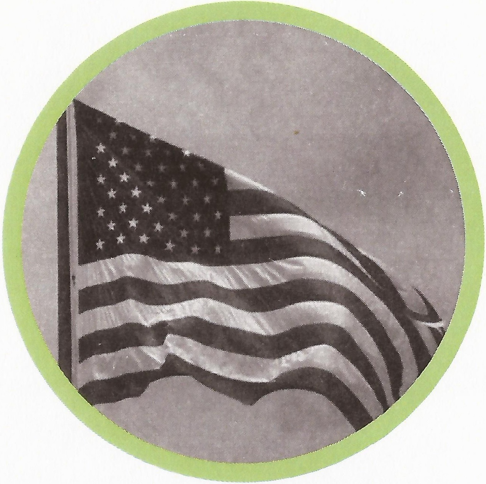
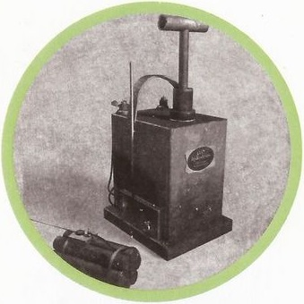

This radioactive element is sometimes used in radiation therapy for
cancer patients
This radioactive actinide is named after the Norse god of thunder

Actinium is the product of radioactive decay of this radioactive
actinide, and its name reflects this fact.
The first nuclear bomb used in World War II was made
from this radioactive actinide
This radioactive actinide is named after the eighth
planet in our solar system. Which is it?
The second nuclear bomb used in World War II was made from This
radioactive actinide.

This synthetic actinide was first produced in the United States
which is often mistaken for the continent after which it was named.

This synthetic actinide is named after the famous scientist
and two time Nobel Prize winner who discovered Polonium and Radium.
This synthetic actinide is named after this famous
university where many other elements have been discovered.
This synthetic element is named after the state in the USA
and the famous university where many other elements have been discovered.
This synthetic actinide is named after the famous scientist
who discovered that energy equals mass times the speed of light squared.
This synthetic actinide is named after the famous scientist
who initiated the world's first nuclear chain reaction underneath the bleachers of
Stagg Field (pictured below) at the University of Chicago
This synthetic actinide is named after the famous scientist
who invented the periodic table of elements.
This synthetic actinide is named after the famous scientist
who invented dynamite.

This synthetic actinide is named after the famous scientist
who invented the cyclotron particle accelerator (pictured below).